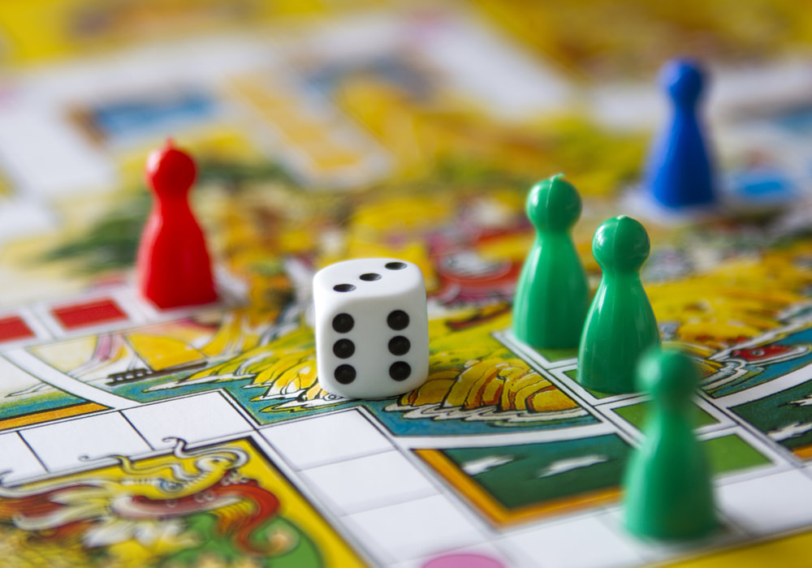

Sporto žaidimai
2020.10.29 09:51
Prisijungti Registracija Žaidimai Azartiniai Koviniai Lenktynių Loginiai Mergaitėms Nuotykių Šaudyklės Sporto Strateginiai Trumpi Veiksmo
Sporto žaidimai
Siekiame pasiūlyti geriausius nemokamus sporto žaidimus internete. Surinkome visą kolekciją žaidimų nuo futbolo, krepšinio, teniso iki plaukimo, golfo, boulingo, tinklinio žaidimų ir daug daugiau. Jei jūs ieškote puikių sporto žaidimų, esate reikiamoje vietoje! Žaiskite internete ir užmirškite atsisiuntimo problemas.
1 2 3 4 5 6 © 2020 pazaisk.eu / Ieškoti žaidimų- Nemokami žaidimai online - Freegames.lt
- Loginiai Žaidimai - Žaidimai - Zaidziu.lt
- Žaidimai, nemokami online žaidimai - 321zaidimai.lt
- Sporto žaidimai
- Nemokami žaidimai online | Draugas.lt
- Įvairūs žaidimai: - pradinukas's JimdoPage!
- Loginiai žaidimai - Žaidimai, nemokami online žaidimai ...
- Suaugusiems žaidimai: internetu, nemokami - Freegames.lt
- Populiariausi online žaidimai | Draugas.lt
- Judrieji žaidimai: - pradinukas's JimdoPage!
- Nemokami žaidimai online - Freegames.lt
Populiariausi online žaidimai - populiariausi nemokami flash žaidimai internete vaikams ir suaugusiems. Žaisk populiariausius online žaidimus nemokamai!
- Loginiai Žaidimai - Žaidimai - Zaidziu.lt
Žaidimai, nemokami žaidimai, online žaidimai. Groti geriausia nemokamus online žaidimus bent 321zaidimai.lt - didžiausias šaltinis žaidimai, siūlanti daugiau nei 2000 įdomių online žaidimus žaisti nemokamai.
- Žaidimai, nemokami online žaidimai - 321zaidimai.lt
Populiariausia nemokamų online žaidimų svetainė Lietuvoje! Žaidimai net ir išrankiausiam skoniui, nuo loginių iki šaudyklių, nuo skirtų mažiausiems iki pažymėtų raide S.
- Sporto žaidimai
Žaidimai yra kuriami laisvu laiku, po dienos darbų, tad naujo žaidimo kūrimas gali trukti nuo savaitės iki kelių mėnesių. Ką daryti, jei pastebėjau klaidą? Susisiekite per Facebook puslapį Gudrutis Dutis su administratoriumi ir papasakokite kas nutiko. Jei pridėsite ekrano kopiją (ang. screenshot), tai padėtų labiau suprasti ...
- Nemokami žaidimai online | Draugas.lt
Akla karvė Visi žaidėjai susėda ratu. Vienam žaidėjui užrišamos akys - jis yra "akla karvė". Tada tas žaidėjas kelis kartus apsukamas aplink ir pastatomas rato viduryje. Žaidėjai sunčia varpelį ratu ir skambina. "Akla karvė" turi sekti varpelio skambėjimą. Kai vadovas duoda ženklą, varpelį turintis žaidėjas nustoja juo skambinti ir nebeperduoda jo toliau.
- Įvairūs žaidimai: - pradinukas's JimdoPage!
Loginiai žaidimai Surinkome daugiau kaip tūkstantį loginių žaidimų, taktinių dėlionių ir mąstymo žaidimų, kurie leis jūsų smegenims treniruotis visiškai nemokamai. Tai saugi vieta ir smagus būdas vaikams tyrinėti ir ieškoti loginio problemų sprendimo internete, lavinti loginio mąstymo įgūdžius.
- Loginiai žaidimai - Žaidimai, nemokami online žaidimai ...
Mėgstantiems skaičiuoti: 1 klasė Aritmetika-maziausiems Skaičių miestelis. Išgelbėk princesę. Suskaičiuok batukus Varlytė Padėk Undinėlei suskaičiuoti 2 klasė Testas Pinigėnai Mumija Linksma mumija Linksma mumija 2 Supervėžliukai Daug žaidimų matematikai Žaidimas X ir 0 (kryžiukai ir nuliukai) 3 - 4 klasė Įdomioji statistika Žaisk ir mokykis daugybos lentelę Testas.
- Suaugusiems žaidimai: internetu, nemokami - Freegames.lt
Loginiai žaidimai – Puzzle games, nemokami Strateginiai žaidimai, Mahjong žaidimai, naikink Burbulus, Zuma pramogos, žaidimai vaikams, strateginiai žaidimai, surask paslėptus daiktus, žaidimai, kuriuose reikia sunaikinti kaladėles. Šie žaidimai yra populiariausi ir naujausi Europoje.
- Populiariausi online žaidimai | Draugas.lt
Nemokami žaidimai Sveiki atvykę į 321zaidimai.lt, pirmaujanti interneto žaidimai svetainę, kur galite žaisti daugybę nemokamus internetinius žaidimus, įskaitant veiksmų žaidimai, sporto žaidimai, puzzle žaidimai, žaidimai mergaitėms, žaidimai vaikams, žaidimai ir daug daugiau.
- Judrieji žaidimai: - pradinukas's JimdoPage!
Edukaciniai žaidimai vaikams. Šis tinklalapis naudoja slapukus, jog užtikrinti geriausią įmanomą potyrį.
Populiariausi online žaidimai - populiariausi nemokami flash žaidimai internete vaikams ir suaugusiems. Žaisk populiariausius online žaidimus nemokamai!
Žaidimai, nemokami žaidimai, online žaidimai. Groti geriausia nemokamus online žaidimus bent 321zaidimai.lt - didžiausias šaltinis žaidimai, siūlanti daugiau nei 2000 įdomių online žaidimus žaisti nemokamai.
Populiariausia nemokamų online žaidimų svetainė Lietuvoje! Žaidimai net ir išrankiausiam skoniui, nuo loginių iki šaudyklių, nuo skirtų mažiausiems iki pažymėtų raide S.
Žaidimai yra kuriami laisvu laiku, po dienos darbų, tad naujo žaidimo kūrimas gali trukti nuo savaitės iki kelių mėnesių. Ką daryti, jei pastebėjau klaidą? Susisiekite per Facebook puslapį Gudrutis Dutis su administratoriumi ir papasakokite kas nutiko. Jei pridėsite ekrano kopiją (ang. screenshot), tai padėtų labiau suprasti ...
Akla karvė Visi žaidėjai susėda ratu. Vienam žaidėjui užrišamos akys - jis yra "akla karvė". Tada tas žaidėjas kelis kartus apsukamas aplink ir pastatomas rato viduryje. Žaidėjai sunčia varpelį ratu ir skambina. "Akla karvė" turi sekti varpelio skambėjimą. Kai vadovas duoda ženklą, varpelį turintis žaidėjas nustoja juo skambinti ir nebeperduoda jo toliau.
Loginiai žaidimai Surinkome daugiau kaip tūkstantį loginių žaidimų, taktinių dėlionių ir mąstymo žaidimų, kurie leis jūsų smegenims treniruotis visiškai nemokamai. Tai saugi vieta ir smagus būdas vaikams tyrinėti ir ieškoti loginio problemų sprendimo internete, lavinti loginio mąstymo įgūdžius.
Mėgstantiems skaičiuoti: 1 klasė Aritmetika-maziausiems Skaičių miestelis. Išgelbėk princesę. Suskaičiuok batukus Varlytė Padėk Undinėlei suskaičiuoti 2 klasė Testas Pinigėnai Mumija Linksma mumija Linksma mumija 2 Supervėžliukai Daug žaidimų matematikai Žaidimas X ir 0 (kryžiukai ir nuliukai) 3 - 4 klasė Įdomioji statistika Žaisk ir mokykis daugybos lentelę Testas.
Loginiai žaidimai – Puzzle games, nemokami Strateginiai žaidimai, Mahjong žaidimai, naikink Burbulus, Zuma pramogos, žaidimai vaikams, strateginiai žaidimai, surask paslėptus daiktus, žaidimai, kuriuose reikia sunaikinti kaladėles. Šie žaidimai yra populiariausi ir naujausi Europoje.
Nemokami žaidimai Sveiki atvykę į 321zaidimai.lt, pirmaujanti interneto žaidimai svetainę, kur galite žaisti daugybę nemokamus internetinius žaidimus, įskaitant veiksmų žaidimai, sporto žaidimai, puzzle žaidimai, žaidimai mergaitėms, žaidimai vaikams, žaidimai ir daug daugiau.
Edukaciniai žaidimai vaikams. Šis tinklalapis naudoja slapukus, jog užtikrinti geriausią įmanomą potyrį.
